Foliage, grass & flowers
Paint whole forests, rock beaches and flower meadows with a brush instead of dragging trees in one by one — then tune the grass, edit each prop's placement rules, and grow a wild-flower meadow in one click.
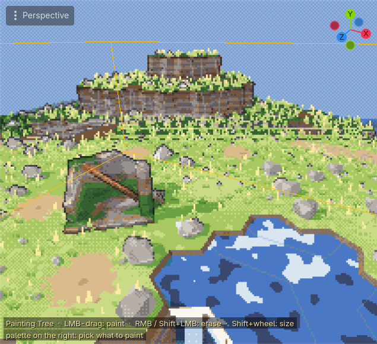
demo/hex_island.tscn. Rocks, tufts and grass all sit on the terraced slopes — and stay planted if you reshape the ground.What you'll learn
- The three Foliage surfaces: tool button, palette, settings strip.
- How to paint a forest, bushes, flowers and rocks — and erase them.
- The palette: Grass, your Scatter Items, and the built-in + presets.
- Density and brush Size, with live scrubbers.
- Fill Terrain and Clear: one-click scattering over the whole map.
- Grass blades and every grass look setting.
- The PixelScatterItem — a prop's own rules — as a filterable reference.
- Wild Flowers: a whole meadow grown by a little climate model.
- Using your own models as foliage, recipes, and a full control reference.
A few Godot words first
- Node
- One object in your scene, like an Instance in Roblox. The terrain is a
MarchingSquaresTerrainnode. - Scene dock / Inspector
- Godot's Explorer (node tree, top left) and Properties window (right side).
- Resource /
.tres - A reusable data file. Each kind of prop is a resource called a PixelScatterItem, saved as
.tres. - Scatter Items
- The list of prop kinds a terrain carries (Tree, Rock, Pine…). Each entry is one PixelScatterItem.
- Mesh / scene /
.glb - A mesh is bare 3D geometry, like a Roblox MeshPart's mesh. A scene (
.tscn) or model file (.glb,.gltf,.blend,.fbx) can hold several pieces — like a Roblox Model. - Ground texture / slot
- The 16 paintable textures from Painting, textures & tint. Grass only grows on slots with Grass ticked.
- LMB / RMB
- Left / right mouse button. "Wheel" is the scroll wheel.
In Roblox Studio you drag trees and rocks out of the Toolbox one at a time, then Move/Rotate/Scale each copy. Here you paint them in bulk with a brush — like painting Roblox's Grass material, but for 3D props. Each prop kind carries its own rules (how dense, which slopes, which ground textures it likes), so a forest looks natural without hand-placing anything.
The Foliage tool and its three surfaces
Select MarchingSquaresTerrain in the Scene dock, then click Foliage in the tool column on the left of the 3D view (or press 5). Click the dots to tour what appears.
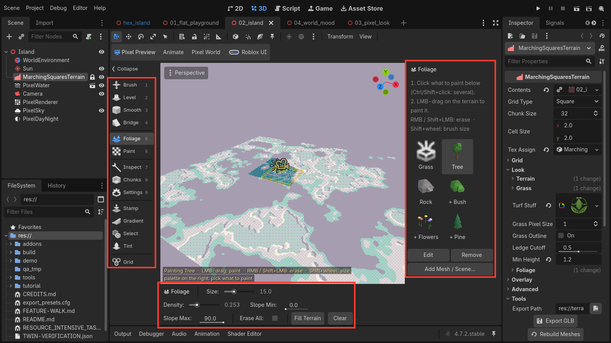
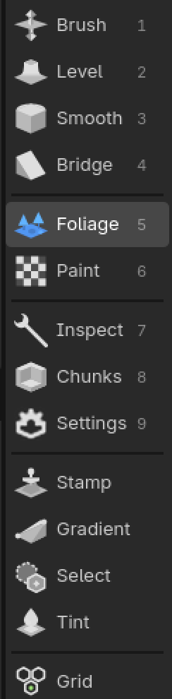
The tool's tooltip, in short: "Paints grass, trees, rocks, bushes, flowers and your own props onto the terrain. Pick one or more entries in the palette on the right (Ctrl/Shift+click for several)." It also reminds you that props follow the terrain when it is sculpted.
Tutorial: paint a pine forest
Open res://demo/hex_island.tscn (FileSystem dock → demo). Its grassy hill and pond make an ideal sandbox. Use the + presets for practice: they render as proper green trees, bushes and flowers. (This scene's own Tree/Pine/Bush/Rock/Flowers/Pebbles items are grey low-poly placeholders.)
- Select
MarchingSquaresTerrainand press 5 (or click Foliage). - In the palette on the right, click + Pine. The hint bar now starts "Painting Pine".
- Move over the grass. A round green disc shows the brush.
- LMB-drag across the grass. Pines appear under the brush. A single click places at least one.
- Look at the palette: + Pine is now just Pine — your first stroke added it to the terrain's Scatter Items.
- Hold Shift and roll the wheel to make the brush bigger; paint again to widen the forest.
- RMB-drag (or Shift+LMB-drag) through the trees to carve a clearing. The disc turns red while erasing.
- Ctrl+Z undoes the last stroke in one step.
Other props, same gesture
Ctrl+click or Shift+click several palette entries (say Pine + Bush + Rock). One stroke then paints all of them together, mixed. Erasing with several selected removes only those kinds.
The palette
The right panel, titled Foliage, is "what the Foliage tool paints: grass and the terrain's Scatter Items". It's a two-column icon grid. Its entries, in order:
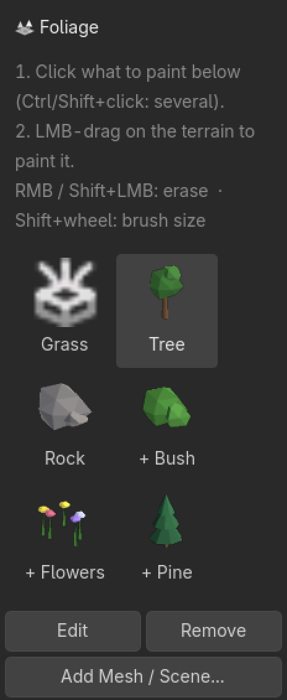
- Grass — always first. Paints the terrain's grass mask (where blades grow) instead of a prop. Tooltip: "Grows only on textures with Grass ticked in the Vertex Painting panel."
- One entry per Scatter Item the terrain already carries, labelled by its Display Name (Tree, Rock, Pine, Bush, Flowers, Pebbles…), with a rendered thumbnail. Tooltip: "<name> (Scatter Item N). Double-click to edit it."
- Built-in "+" presets for any of the five kinds the terrain doesn't have yet: + Rock, + Bush, + Tree, + Pine, + Flowers. Tooltip: "Built-in <kind>: click it and paint. This terrain has no <kind> item yet: the first stroke adds it to its Scatter Items (undoable)."
Selecting: click = one entry; Ctrl/Shift+click = several; double-click a prop = open it in the Inspector (same as Edit).
Entries move around as items are added and removed, so find them by name, not by position.
What the "+" really does
Painting a + entry materialises it: the first stroke both paints the props and adds a real PixelScatterItem to the terrain, as a single undoable step. The palette label loses its "+".
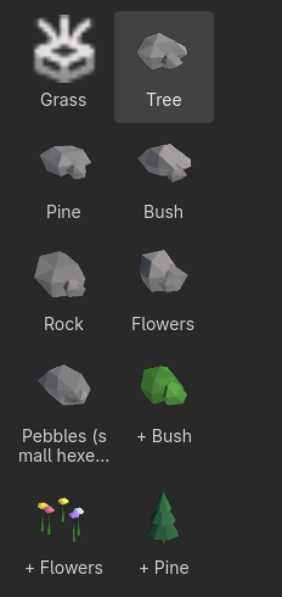
A custom-mesh item of a given kind does not hide that kind's "+" preset. That's why a terrain can show both "Bush" and "+ Bush" — they're two different prop kinds.
The palette is like a tiny Toolbox that belongs to this terrain. Instead of inserting a model and dragging it into place, you pick it and paint. Edit is like selecting the model and opening Properties — but changes apply to every copy of that prop at once.
The Foliage strip
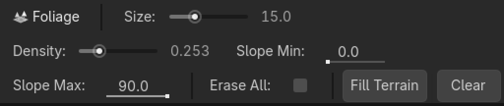
Mouse & wheel while Foliage is active
| Gesture (over the 3D view) | Does |
|---|---|
| LMB-drag | Paint the selected entries. A click places at least one prop. |
| RMB-drag or Shift+LMB-drag | Erase the selected entries (every prop if Erase All is ticked). |
| Shift+wheel | Brush Size. Doesn't zoom the camera. |
| Alt+wheel | Doesn't zoom the camera (the foliage brush is always round, so rotation has no visible effect). |
| Ctrl+wheel / plain wheel | Zoom the camera. Foliage has no Strength, so Ctrl+wheel is free. |
The brush disc is green while painting and red/orange while erasing (Shift held or RMB). If a stroke changes nothing — the spot is full, under water, built over, or outside the slope range — the view shows a "Nothing painted" message; an erase that finds nothing of the selected kind shows "Nothing erased here".
Hint bar with nothing selected: Pick Grass, a tree or a rock in the Foliage palette on the right · then LMB-drag on the terrain to paint it
Density
Density (0.05–1.0, default 0.25) is how full one stroke paints. At 1, props almost touch; lower is sparser. Spacing follows each prop's size, so big pines spread out more than small flowers at the same density. A new stroke over the same spot fills the gaps — so you can build density gradually.
The strip's Density only affects painting. Fill Terrain uses each item's own Density instead (see PixelScatterItem).
Brush Size
Size is the brush diameter in world units (1–50 on the slider; it accepts a little more; default 15). Change it live with Shift+wheel.
Size and Density are like the Roblox Terrain brush's Size and Strength — but instead of adding terrain, they decide how wide and how full the scatter is.
Slope Min & Slope Max
Like the Paint tool's slope filter: a stroke only plants on ground whose steepness is between Slope Min and Slope Max (0–90°, step 0.5; defaults 0 and 90 = no filter). For example, Slope Max 20 keeps trees on near-flat ground only. On the hex demo island the "slopes" are vertical hex walls where props don't sit anyway; the filter is most useful on a square-grid terrain with real hillsides. (Scatter Items have their own Slope Min/Max too, used by Fill Terrain.)
Erasing
RMB-drag (or Shift+LMB-drag) erases the selected kinds only — erase with Pine selected and the rocks stay. Tick Erase All to wipe every prop under the brush regardless of selection; the hint bar then reads "RMB / Shift+LMB: erase every prop".
Grass is its own entry (the mask). Erasing trees leaves the grass blades alone. On a slow computer the view can take a moment to redraw a freshly edited patch — move the mouse and it settles.
Fill Terrain & Clear
Fill Terrain scatters the selected props over the whole terrain, using each item's own rules — its density, allowed ground textures, slope, height and clusters. It replaces their current instances. Clear removes every instance of the selected props. Both act on the selected props only (not Grass), and both are one undoable step.
When you paint, props go where your brush goes (filtered only by the strip's Slope Min/Max and Density). The item's ground textures, height and cluster rules only apply to Fill Terrain.
Roblox has nothing like Fill Terrain — it's a one-click procedural scatter of the whole map. The closest habit is running a plugin that populates trees; here it's built in, and undoable.
Undo
Every action is one undoable step (Ctrl+Z): paint, erase, Fill Terrain, Clear, materialising a "+", and adding or removing an item.
Reshape the ground after you've planted it and the props ride along: paint a cluster, switch to the Brush tool (Sculpting), raise the ground under it, and the props stay planted on the new surface. Grass re-drapes too. In Roblox you'd have to re-place every tree after editing terrain.
Grass blades
Grass here is automatic decoration: small blade tufts that grow on any ground texture with Grass ticked in the Paint tool's Textures panel (see texture slots). The Grass palette entry paints a mask on top of that: where blades are allowed.
- Click Grass in the palette.
- RMB-drag over a grassy area: the tufts disappear (the ground stays green — only blades are removed).
- LMB-drag to paint blades back.
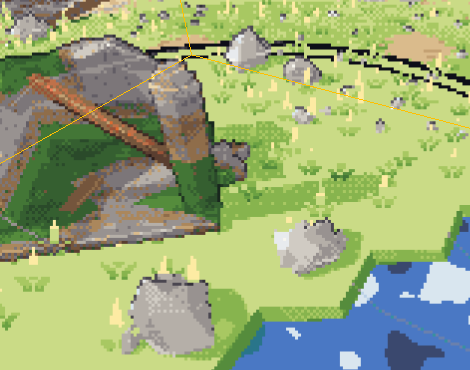
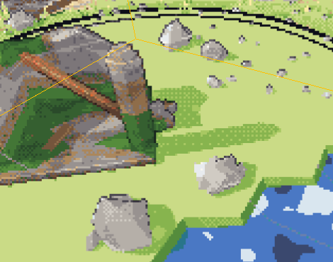
Painting Grass on a texture without the Grass tick does nothing. If grass won't appear, check the slot in the Paint tool's Textures panel, and that the terrain's master Grass switch is on.
The master Grass switch
The terrain's Grass checkbox (Inspector ▸ Look ▸ Grass, or Settings ▸ Grass) turns all blades on or off at once. The ground colour doesn't change.
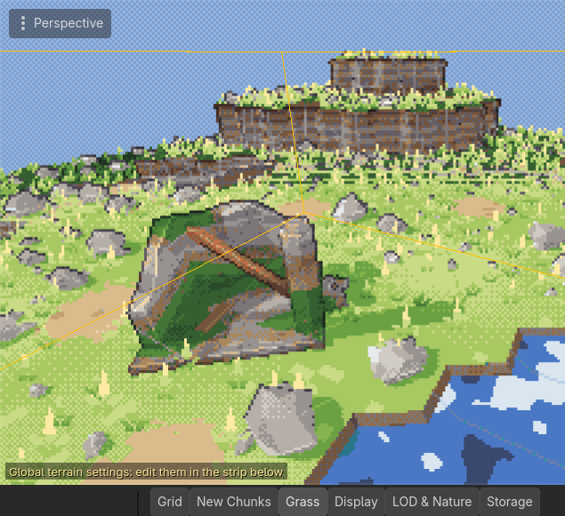
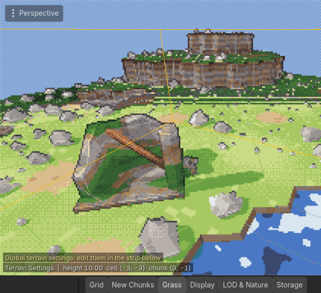
Grass look settings
The grass look lives on the terrain node, in two places showing the same values: the Inspector ▸ Look ▸ Grass group, and the Settings tool (9) ▸ Grass page (tabs: Grid · New Chunks · Grass · Display · LOD & Nature · Storage).
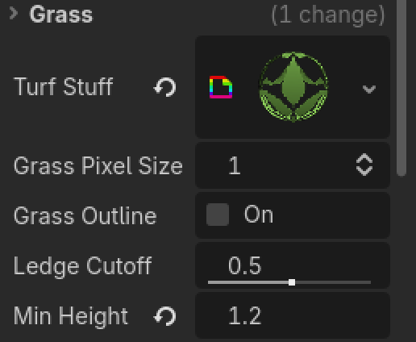
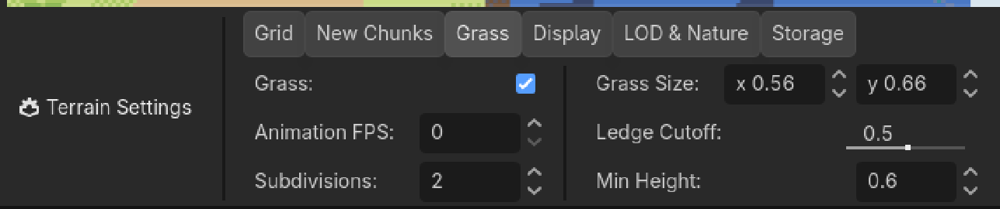
| Setting | Where | Range · default | What it does |
|---|---|---|---|
| Grass | Inspector, Settings | on/off · on | All grass blades on/off. "Grow grass on slots with 'Has grass'." |
| Animation FPS | Settings | ≥ 0 · 0 | > 0 animates the grass at a limited fps (choppy, pixel-art style); 0 = smooth wind. Stored on the Turf Stuff shader; undoable. |
| Subdivisions | Inspector, Settings | 1 – 8 · 2 | Blades per cell = subdivisions². 2 → 4 blades, 4 → 16. |
| Grass Size | Inspector, Settings | x, y · ≈(0.56, 0.66) on hex_island | Blade width and height. Type into the x/y fields. |
| Grass Texture | Inspector | Texture2D | Optional override for the blade sprite. |
| Turf Stuff | Inspector | ShaderMaterial | The grass shader material (mst_grass.gdshader); holds Animation FPS. |
| Grass Pixel Size | Inspector | 1 – 16+ · 1 | Pixel-size multiplier for blades in the pixel renderer. Bigger = chunkier blocks. |
| Grass Outline | Inspector | On · off | Draw a pixel outline around blades. |
| Ledge Cutoff | Inspector, Settings | 0 – 1 · 0.5 | "Grass is not planted on cliff-edge bands stronger than this." Keeps grass off cliff tops. |
| Min Height | Inspector, Settings | float · 1.2 (02_island), 0.6 (hex_island) | "No grass below this height (e.g. your water level)." |
Grass Pixel Size works together with the scene's pixel-art renderer; see The pixelizer.
Like Roblox Terrain's Grass material, the blades are automatic — you don't place them. But here you control which textures grow them, their size, density (Subdivisions), chunkiness and animation, and you can erase or add them with a brush.
Editing a prop: the PixelScatterItem
Each prop kind is a PixelScatterItem resource. Select it in the palette and click Edit (or double-click it): its settings open in the Inspector. Changes apply to every copy of that prop. The five built-in presets live in addons/MarchingSquaresTerrain/scatter_presets/ (rock, bush, tree, pine, flowers).
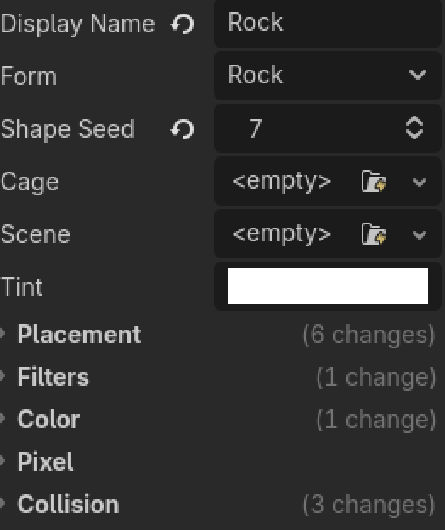
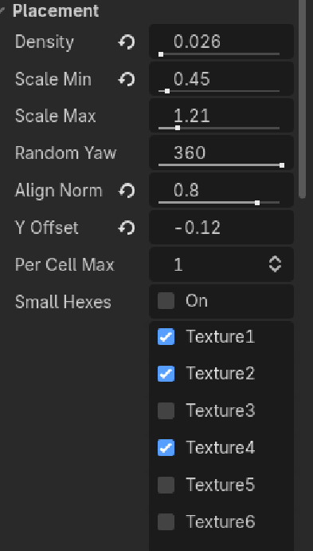
PixelScatterItem reference
Type to filter (try "slope", "cluster", "wind" or "collision").
Display Name top
The label in the palette.
- Type
- text
Form top
The built-in procedural shape. Set to Custom when you supply your own Cage or Scene.
- Options
- Custom, Rock, Bush, Tree, Pine, Flowers
Shape Seed top
Varies the procedural shape. Change it to get a differently shaped rock or tree.
- Type
- integer
Cage top
Your own mesh for the prop. Bare meshes (.mesh / .tres / .res / .obj) land here. More.
- Type
- Mesh
Scene top
Your own scene or model for the prop (.tscn / .glb / .gltf / .blend / .fbx). More.
- Type
- PackedScene
Tint top
Colour for the prop.
- Type
- Color
Density Placement
The item's own density — used by Fill Terrain (not by brush painting).
- Range
- 0.0015 – 4
Scale Min / Scale Max Placement
Each copy gets a random size between these.
- Range
- 0.05 – 8
Random Yaw Placement
Random spin around the vertical axis, so copies don't all face the same way.
- Range
- 0 – 360°
Align Norm Placement
Align to normal: how much the prop tilts to match the ground. 0 = upright (trees), 1 = flat on the slope (rocks).
- Range
- 0 – 1
Y Offset Placement
Raise or sink the prop. Negative sinks it into the ground (rocks use −0.12).
Per Cell Max Placement
Maximum copies in one cell.
- Range
- 1 – 16
Small Hexes Placement
An on/off placement option of the item.
- Type
- bool
Ground Slots Placement
Texture1…Texture16 ticks: which painted ground textures this prop may grow on. Untick Sand to keep trees off beaches.
Seed Placement
Random seed for placement. Change it and Fill Terrain again for a different layout.
Slope Min / Slope Max Filters
Steepness the item accepts during Fill Terrain.
- Range
- 0 – 90°
Height Min / Height Max Filters
Terrain heights the item accepts during Fill Terrain — e.g. keep reeds low near the water, or pines high on the hills.
Cluster Size Filters
Clumps props together using noise; larger = bigger clumps. 0 = no clumping.
- Range
- 0 – 256 (accepts more)
Threshold Filters
Works with Cluster Size: how much of the noise counts as "inside a clump". Higher = fewer, tighter clumps.
- Range
- −1 – 1
Hue Jitter Color
Random hue variation per copy.
- Range
- 0 – 0.5
Value Jitter Color
Random brightness variation per copy.
- Range
- 0 – 0.5
Pixel Size Pixel
Pixel-size multiplier for this prop in the pixel renderer.
- Range
- 1 – 16
Outline / Outline Id Pixel
Draw a pixel outline, and which outline style (0–7).
Cast Shadows Pixel
Whether copies cast shadows.
- Type
- bool
Wind Sway Pixel
How much the prop sways in the wind.
- Range
- 0 – 1
Collision Collision
Whether players bump into the prop, and its shape.
- Options
- None, Cylinder, Box
Collision Size Collision
Size of the collision shape.
- Type
- Vector3 (x, y, z)
Impact Stratum Collision
Physics layers the collision lives on (like Roblox CollisionGroups).
Collision Min Scale Collision
The smallest copy scale that still gets collision.
The five built-in presets
| Preset | Form | Density | Slope Max | Cluster Size | Notes |
|---|---|---|---|---|---|
| Tree | Tree | 0.02 | 25° | 22 | |
| Pine | Pine | 0.026 | 32° | 18 | Tolerates steeper ground than Tree. |
| Bush | Bush | 0.04 | 30° | 14 | |
| Flowers | Flowers | 0.08 | 25° | 9 | Threshold 0.25: small tight patches. |
| Rock | Rock | 0.03 | 55° | — | Align Norm 0.8, Y Offset −0.12: lies on slopes, slightly sunk. |
Your own models as foliage (short version)
Want your own tree, mushroom or crate as a paintable prop? Click Add Mesh / Scene… under the palette. An Open a File dialog appears, listing your project (res://) and showing only the file types it accepts. Pick a file and it becomes a new PixelScatterItem, named after the file (underscores become spaces), already selected and ready to paint:
- A scene or model —
.tscn / .scn / .glb / .gltf / .blend / .fbx— goes into the item's Scene slot. - A bare mesh —
.mesh / .tres / .res / .obj— goes into the item's Cage slot. - Either way, Form is set to Custom.
You can also do it by hand: Edit an item, set Form to Custom and drag a file into Scene or Cage. Getting models into the project, and making them look right as props, is covered step by step in Using models: tiles, foliage & props (and importing in Importing models).
It's like turning a Toolbox model into a brush. Scene ≈ a Roblox Model (several parts); Cage ≈ a single MeshPart's mesh.
Wild Flowers: a meadow in one click
MarchingSquaresWildFlowers is a separate node you add under the terrain. It plants whole meadows of wild flowers in one go, using a simple climate model: slope, how wet the ground is, shade from trees and distance from water.
Adding the node
- Select the terrain, press 9 for Settings, open the LOD & Nature page.
- Click Add on the Wild Flowers row. It creates the child node, wires its Terrain to this terrain, and selects it.
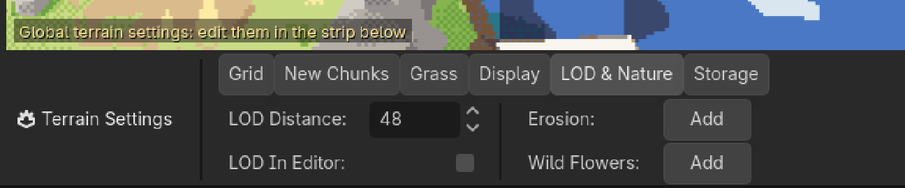
- Right-click the terrain in the Scene dock → Add Child Node →
MarchingSquaresWildFlowers. - Drag the terrain node into the new node's Terrain slot in the Inspector.
Until you do, a warning icon says: "Assign the Terrain to plant: without one, Scatter Wild Flowers does nothing."
Scatter and Clear
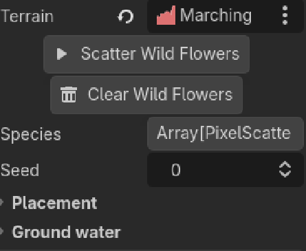
Press Scatter Wild Flowers (or Scatter in its strip): flowers bloom across the whole terrain as one undoable action ("scatter wild flowers"), gathering toward the water's edge. Clear removes them ("clear wild flowers").
Species is a list of PixelScatterItems, auto-filled on the first scatter with about nine built-in wild species (Wild Yarrow, Foxglove, Cowslip, Harebell, Mallow…). Change Seed for a different layout.
Scatter permanently adds its species to the terrain's Scatter Items. They then show up in the Foliage palette — and stay there after Clear — so the palette gets longer. Remove them with Remove if you don't want them.
The Wild Flowers strip
With the node selected, a bottom strip titled Wild Flowers appears with two tabs.
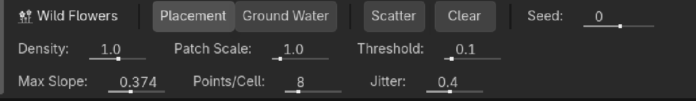
| Control | Range · default | What it does |
|---|---|---|
| Scatter | button | Plant the meadow (scatter_flowers(), undoable). |
| Clear | button | Remove it (clear_flowers(), undoable). |
| Seed | int · 0 | Different seed, different meadow. |
| Density | 0 – 2+ · 1.0 | Overall amount of flowers. |
| Patch Scale | 0.05 – 8 · 1.0 | Size of the flower patches. |
| Threshold | 0 – 1 · 0.1 | Bloom threshold: higher = fewer spots qualify. |
| Max Slope | 0 – 1 · 0.374 | Steepest ground flowers grow on. |
| Points/Cell | 2 – 32 · 8 | Candidate spots tested per cell. |
| Jitter | 0 – 1 · 0.4 | Random offset of each spot, so flowers don't sit on a grid. |
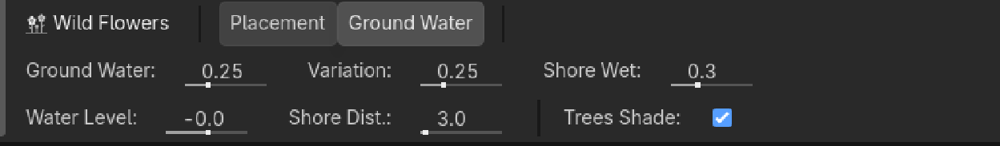
| Control | Range | What it does |
|---|---|---|
| Ground Water | 0 – 1 | Base wetness of the ground. |
| Variation | 0 – 1 | How much wetness varies across the map. |
| Shore Wet | 0 – 1 | Extra wetness near water — flowers gather at the shore. |
| Water Level | height | Where the water is. |
| Shore Dist. | 0.01 – 64 | How far from the water the shore wetness reaches. |
| Trees Shade | on/off | Fewer flowers under trees. |
Recipes
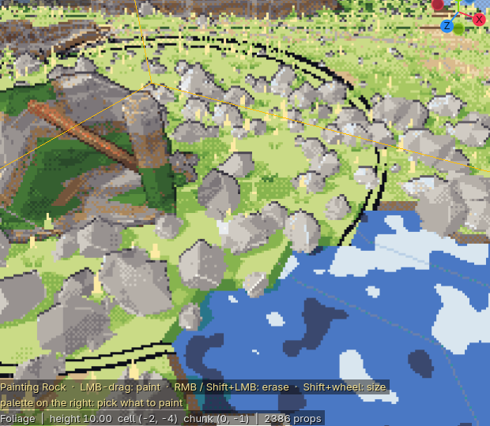
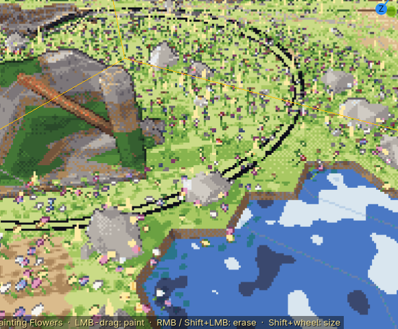
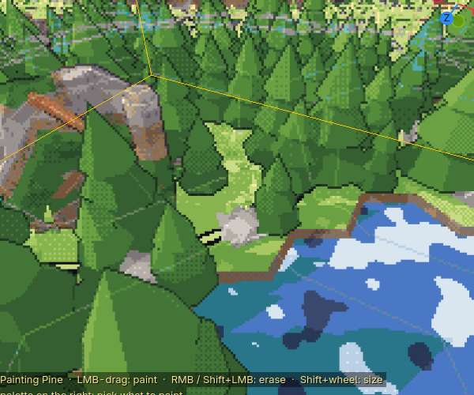
Combine all three on hex_island: a forest edge on the hill, a meadow on the flat ground below, rocks along the pond. Then run Wild Flowers ▸ Scatter for natural filler, and switch the grass Animation FPS to 4 for a retro sway.
Foliage tool reference
Foliage button
Activates the Foliage tool; opens the palette and the Foliage strip. Visible only while a terrain is selected.
- Shortcut
- 5
Palette
Grass, the terrain's Scatter Items, and built-in + presets. Click = one, Ctrl/Shift+click = several, double-click = edit.
Grass entry
Paints/erases the grass blade mask. Only grows on grass-ticked textures.
+ presets
+ Rock, + Bush, + Tree, + Pine, + Flowers — only the kinds the terrain lacks. First stroke adds the item (undoable).
Edit
Show the selected prop's settings (mesh, scale, placement rules, collision…) in the Inspector. Needs a prop selected.
Remove
Remove the selected props from the Scatter Items, with every instance (undoable). Needs a prop selected.
Add Mesh / Scene…
Add a prop from a mesh (.mesh/.tres/.res/.obj → Cage) or a scene/model (.tscn/.glb/.gltf/.blend/.fbx → Scene), and select it.
Size
Brush diameter in world units; always round.
- Range
- 1 – 50 (accepts a little more)
- Default
- 15
- Shortcut
- Shift+wheel
Density
How full a stroke paints; 1 = props almost touching. Painting only. Re-stroking fills gaps.
- Range
- 0.05 – 1.0
- Default
- 0.25
Slope Min
Only affect terrain at least this steep.
- Range
- 0 – 90°, step 0.5
- Default
- 0
Slope Max
Only affect terrain at most this steep.
- Range
- 0 – 90°, step 0.5
- Default
- 90
Erase All
Erasing removes every prop, not only the selected ones.
- Default
- off
Fill Terrain
Scatter the selected props over the whole terrain with each item's own rules; replaces their instances. Undoable.
Clear
Remove every instance of the selected props. Undoable.
LMB-drag
Paint the selected entries; a click places at least one. Green disc.
RMB-drag / Shift+LMB-drag
Erase the selected entries (or every prop with Erase All). Red/orange disc.
Mouse wheel
Shift+wheel = Size. Shift/Alt+wheel never zoom. Ctrl+wheel and plain wheel zoom the camera.
Messages
"Nothing painted" (spot full / under water / built over / outside slope) and "Nothing erased here".
Undo
Ctrl+Z: paint, erase, fill, clear, + materialise, add/remove item — each one step.
Wild Flowers: Add
Create and wire a MarchingSquaresWildFlowers child.
Check yourself
You painted Grass on a sandy beach and nothing happened. Why?
Grass only grows on ground textures with Grass ticked in the Paint tool's Textures panel. Sand isn't ticked by default. Tick it (page 4) or paint a grassy texture first.
You want to remove only the rocks from a patch full of trees and rocks. How?
Select only Rock in the palette, make sure Erase All is off, and RMB-drag (or Shift+LMB-drag) over the patch.
Fill Terrain put pines on the beach. Which setting fixes that?
Edit the Pine item and untick the sand texture in Placement ▸ Ground Slots (or lower its Height Min / Slope filters), then Fill Terrain again. The strip's Density doesn't affect Fill Terrain.
Where does a .glb tree land when you use Add Mesh / Scene…?
In the new PixelScatterItem's Scene slot, with Form set to Custom. A bare mesh would go into Cage. See Using models.
Related pages
- Painting, textures & tint — the Grass tick per texture, and ground textures props can be limited to.
- Sculpting terrain — reshape the ground; props and grass follow.
- Using models: tiles, foliage & props — your own models as foliage, in full.
- Importing models — getting .glb / .blend / .fbx files into the project.
- Chunks, settings & saving — the Settings tool pages (Grass, LOD & Nature).
- The pixelizer — how Pixel Size and outlines render.
- Sky, weather, water & effects — the water your flowers gather around.